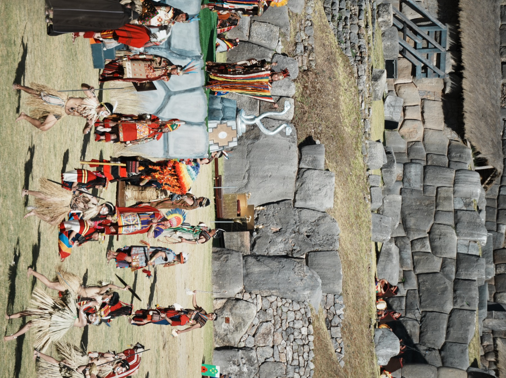
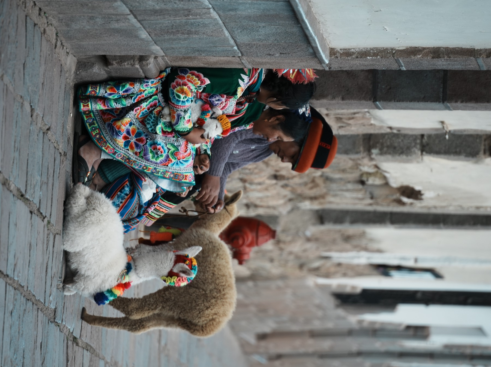
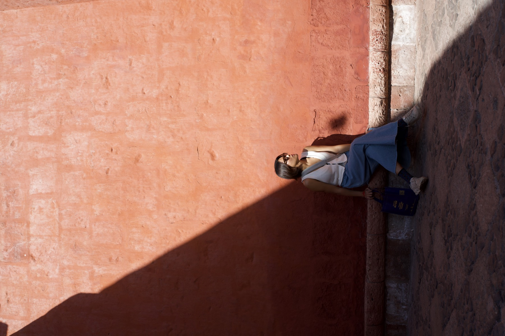
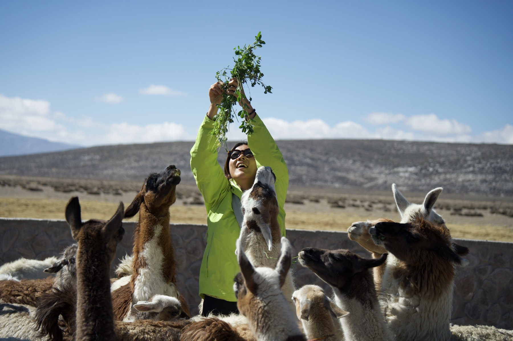
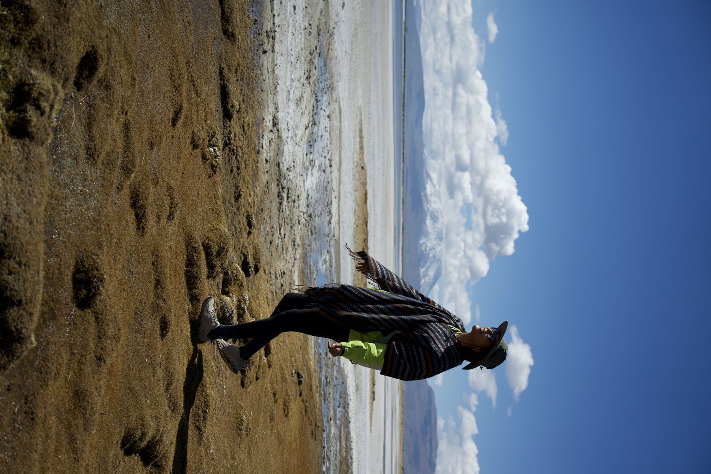
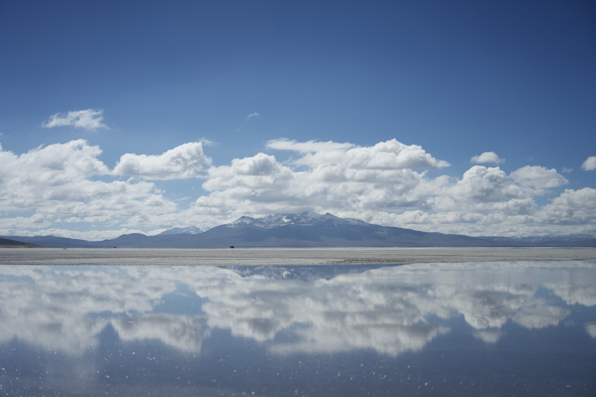
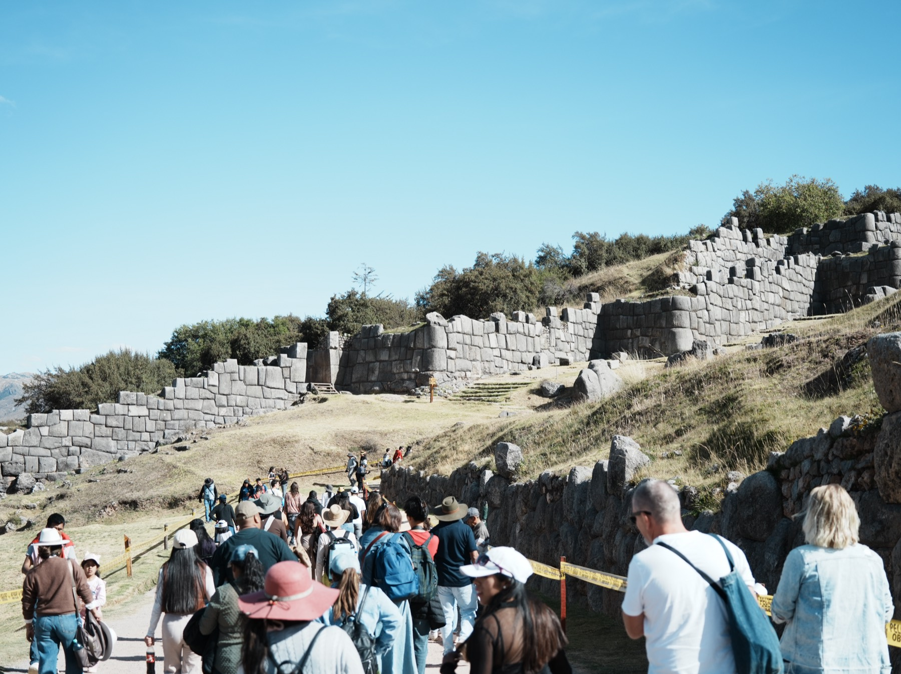
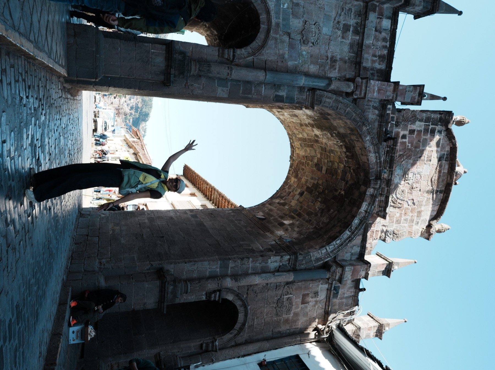
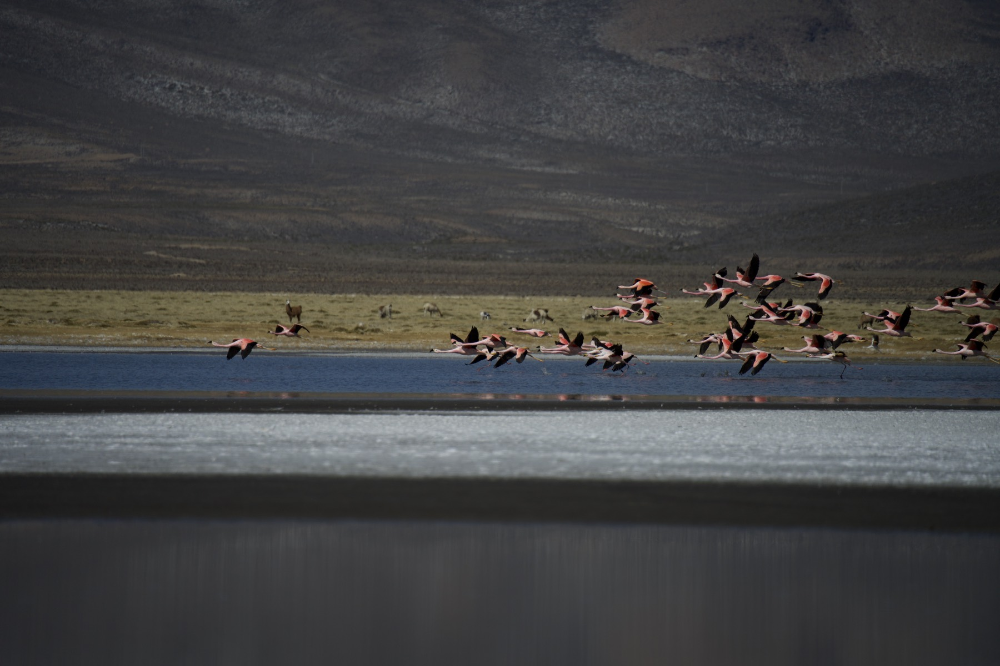

Chapter 04 · Land of the Incas
Peru
秘魯 · 眾神與織者之地
JUN 18 — JUL 7 · DAY 59–78 · 利馬 → 庫斯科 → 馬丘比丘 → 阿雷基帕
Chapter 04 · Land of the Incas
秘魯 · 眾神與織者之地
JUN 18 — JUL 7 · DAY 59–78 · 利馬 → 庫斯科 → 馬丘比丘 → 阿雷基帕
三千四百公尺的舊都、五百年前的太陽祭臺、照片看過一千次的古城。秘魯是這趟旅程海拔最高、歷史最深的一段——連呼吸都要慢下來的地方,剛好用來把人生想慢一點。
The Route · 印加之路
五點起床、五點半早餐、六點半到門票口——馬丘比丘值得。連續走三天路腳真的要爛掉,所以休息日就該市場吃飯、喝咖啡、喝果汁、逛街。至於彩虹山,一句話評測:今天的彩虹山很一般。
— Alice & Ryan 的日記
The Siguas · 火烙圖騰
五百年以前,印加人在這裡祈禱太陽多留一點時間。
整個山頭都有石頭整齊排列的痕跡——
因為他們相信,石頭可以吸收能量,保護農作物。
靈感:阿雷基帕博物館 · Siguas 火烙圖騰「中央神祇」
我們在利馬約會🌧 Barranco brunch 好好吃、下雨回飯店拿傘、再走回去喝咖啡、晚上燭光晚餐。朝夕相處兩個月了,好扯,但還沒有膩,蠻有趣的。⚠️ 防雷:機場電話卡被騙,隔天殺回去討錢,成功了!
— Alice & Ryan 的日記

Inti Raymi · Sacsayhuamán · 一年一度,太陽的節日
一年一度的太陽祭 Inti Raymi!三個場地:太陽神殿、武器廣場、薩克塞華曼,導遊提前幫我們站好位置(這個很重要)。老實說第三場我就不太想看了,因為也看不太懂,但整個體會傳統祭典還是非常感動——看完直接回飯店睡了兩個小時。
— Alice & Ryan 的日記
凹了半天決定住 Pisac 小鎮,到了民宿 Melissa Wasi 嚇死了,像仙境欸。誤打誤撞走到太陽祭臺 Intihuatana。隔天爬到 4135 公尺的山湖,太累了但真的美。⚠️ 高山症的藥一定要帶,老公頭痛到晚上差點嚇死我。
— Alice & Ryan 的日記

Cusco · 石板路、彩衣、羊駝,日常即風景
很多文物的歷史,跟殖民統治後的拼接。
有點難過,也有點諷刺——
因為整個 Tour 的結束點,在教堂。
太陽神殿 Qorikancha · 2026.07.01

Santa Catalina, Arequipa · 紅牆下,白城的太陽
庫斯科到白城,Cruz del Sur 夜巴 10 個小時,180 度平躺、PEN 180 一個人,乾淨沒異味宛如商務艙——但晚上超級晃,腰上的安全帶一定要繫。巴士站還撿到香港男生 Thomas:「你們也說中文啊!」白城很美,很不真實。
— Alice & Ryan 的日記






Day 60 · 利馬的床上
這次旅行肯定不會有答案的。
因為,為什麼要有答案?
人生本來就沒有答案啊。
這是誰出的考試?老師是誰?
我們都太趕了,一直在趕路。—— Alice